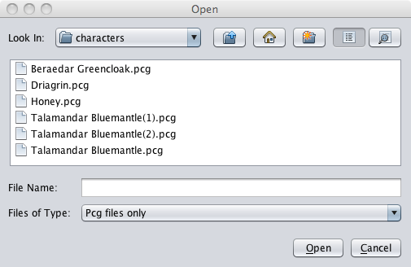
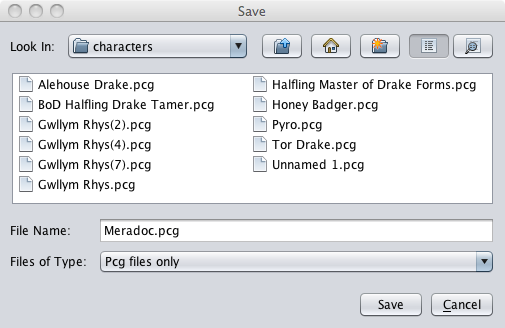

These are the File menu options that are available to use once sources have been loaded. These options are used for starting a new PC, loading an existing PC, or exporting a currently loaded PC to a file.
The New command allows the user to create a new PC based on the loaded sources. The newly created PC appears on a new tab in the main window ready for the user to input the information needed to build the PC.

The Open command prompts the user to pick an existing PC to load. The Open window opens on the last place that the user selected to save a PC to and shows the available PCs.
The Close command closes the PC without exiting the application.
The Close All command closes all loaded PCs without exiting the application. PCGen will prompt the user for each PC to see if it needs to be saved.

The Save command saves the active PC. If the character has been saved before, the PC will be saved in the same location, and under the same name, as previously saved. If the PC has not been saved yet the Save window will pop up with the PC's name already entered into the filename field. Click the Save button and the PC will be saved. The default location to which the PC will be saved is the "Characters" folder under the PCGen main directory but the user can navigate to any location desired.
The Save As command allows the user to save the PC under a new filename. The Save window will pop up and ask for the name under which the PC will be saved. Enter the new name and click the Save button. This will create a new file with the new name used and will not overwrite the original file from which the PC was loaded.
The Save All command is used to save all the open PC's to their respective files and folders. This is a quick way to save multiple loaded PC's at one time using the same names that they previously had before.
The Revert to Saved command reverts all changes made to the character and takes the PC back to the way it was when last loaded or saved.
The Party commands opens a submenu that provides additional options, allowing the user to save and open a collection of PCs as a group with a single command.
The Print command sends the selected PC to the printer using one of several files.

The Export command exports the PC to a file used to view the PC. These are used primarily to view and use the PC with other applications such as Internet Browsers, Adobe Acrobat, OpenRPG, and others.
Between the Export and the Exit commands you will find a list of the most recently closed or saved characters. These are included here to allow convenient loading directly from this menu.
The Exit command exits PCGen and prompts the user to save the application before closing.